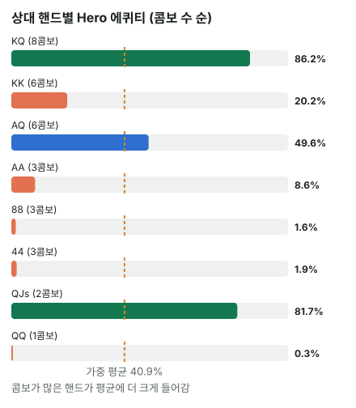

안녕하세요. I05에서 두 핸드를 붙여 에퀴티를 봤죠. 그런데 그건 상대 카드를 안다고 치고 한 계산이었어요.
실전에서는 상대 카드를 몰라요. 그래서 상대가 들고 있을 수 있는 핸드를 묶음(레인지)으로 놓고 에퀴티를 구해요. 오늘은 그 묶음을 하나의 숫자로 만드는 법, 그리고 그 숫자가 무엇을 뜻하고 무엇을 숨기는지까지 따라가 볼게요.
이 글에서 배울 것
- 레인지의 뜻과, 레인지 안의 핸드마다 콤보 수가 다른 이유
- 핸드별 에퀴티를 콤보 수로 무게를 줘서 하나의 숫자로 만드는 법, 그리고 왜 그렇게 해야 하는지
- 레인지 에퀴티 하나가 숨기는 것: 실제로는 크게 이기거나 크게 지는 판들의 평균이라는 점
1단계. 레인지란?
정의 한 줄
레인지 = 상대가 지금 이 행동을 할 때 가질 수 있는 핸드의 목록이에요. "상대는 AA일 수도, AQ일 수도, 88일 수도"를 한 번에 적은 거죠.
핸드마다 나올 수 있는 횟수가 달라요
레인지 속 핸드는 콤보 수가 서로 달라요. 콤보는 그 핸드가 될 수 있는 실제 카드 두 장 조합의 개수예요(B05). 예를 들어 아무 카드도 안 보이면 AA는 무늬 조합이 6가지, AK는 16가지죠. 그리고 보드나 우리 손에 이미 보이는 카드가 있으면 그 수가 줄어요.
복불복 상자
비유하면 복불복 상자예요. 상자 안에 쪽지가 여러 장 있고, 같은 이름의 쪽지가 여러 장 들어 있으면 그 이름이 뽑힐 가능성이 크죠. 상대 레인지는 이 상자이고, 쪽지 한 장이 콤보 하나예요.
이게 무슨 뜻이냐면, 레인지는 핸드 이름의 목록처럼 보여도 실제로는 카드 조합의 목록이라는 거예요. 이름이 하나여도 쪽지는 여러 장일 수 있어요.
2단계. 예시 — 탑페어 vs 레인지 (가정 레인지 기준)
Hero 
 · 보드
· 보드 


Hero는 Q 탑페어, 키커 A예요. 상대가 이 보드에서 벳한다면, 그 레인지를 이렇게 가정할게요. Q보다 높은 포켓페어, Q가 든 핸드 몇 가지, 그리고 셋 세 가지(QQ·88·44)예요. QJ는 프리플랍에 같은 무늬만 들어온다고 보고 QJs만 넣었어요.
| 상대 핸드 | 콤보 | 이 핸드를 상대로 한 Hero 에퀴티 |
|---|---|---|
| AA | 3콤보 | 약 8.59% |
| KK | 6콤보 | 약 20.2% |
| 1콤보 | 약 0.3% | |
| AQ | 6콤보 | 약 49.62% |
| KQ | 8콤보 | 약 86.25% |
| QJs | 2콤보 | 약 81.67% |
| 88 | 3콤보 | 약 1.62% |
| 44 | 3콤보 | 약 1.92% |
콤보 수는 이렇게 나와요
- AA: Hero가 A♥를 들고 있어서 남은 A 3장으로 만드는 조합 → 3콤보
- KK: K는 하나도 안 보여서 6콤보. AA·KK처럼 보드의 어떤 카드보다 높은 포켓페어를 오버페어라고 해요. 그래서 Q 탑페어를 이겨요
- QQ: Q♠는 보드, Q♦는 Hero 손에 있어서 남은 Q는 Q♥·Q♣ 두 장뿐 → 1콤보. 보드의 Q와 만나 탑 셋이라 Hero가 거의 못 이겨요
- AQ: A 3장 × Q 2장 = 6콤보. 같은 탑페어·같은 키커라 대부분 비겨서 약 반
- KQ: K 4장 × Q 2장 = 8콤보. Hero보다 키커가 낮아서 Hero가 크게 앞서요
- QJs: 남은 Q(♥·♣)와 같은 무늬 J → 2콤보
- 88·44: 보드에 한 장씩 있어서 3콤보씩. 이미 셋이라 Hero가 크게 뒤져요
3단계. 하나의 숫자로 — 콤보 가중 평균
계산하는 법
핸드별 에퀴티에 콤보 수를 곱해서 더한 뒤, 전체 콤보 수로 나누면 돼요.
(3 × 8.59 + 6 × 20.2 + 1 × 0.3 + 6 × 49.62 + 8 × 86.25 + 2 × 81.67 + 3 × 1.62 + 3 × 1.92) ÷ 32 = 약 40.9, 즉 약 40.9%
상대 레인지 32콤보 전체를 상대로 한 Hero 에퀴티예요.
32번 뽑아 본다고 생각하면
이 계산은 복불복 상자에서 쪽지를 32번 뽑는 것과 같아요. 쪽지 32장이 한 번씩 나온다고 하면, AA 쪽지가 3번, KQ 쪽지가 8번, QQ 쪽지가 1번 나오죠. 그 32번 동안 Hero가 가져가는 몫을 다 더해서 32로 나누면, 한 번 평균 몫이 돼요.
그래서 콤보가 많은 KQ(8콤보)와 KK·AQ(6콤보씩)가 결과를 크게 좌우해요. 쪽지가 많으니 자주 뽑히니까요.
1콤보짜리 QQ도 빼지 않아요
QQ는 쪽지가 한 장뿐이에요. 그럼 빼고 계산해도 될까요? 직접 해 보면, QQ를 빼고 31콤보로 계산한 값은 약 42.21%예요. 42.21 − 40.9 = 약 1.31만큼 Hero 몫이 부풀어요.
이게 무슨 뜻이냐면, 콤보가 적은 핸드는 무게가 작을 뿐 0이 아니라는 거예요. 특히 QQ처럼 Hero가 거의 못 이기는 핸드는, 한 장짜리 쪽지라도 평균을 눈에 띄게 끌어내려요. 레인지에서 핸드를 뺄 수 있는 건 "콤보가 적어서"가 아니라 "상대가 이 행동을 그 핸드로는 안 한다"고 가정할 때뿐이에요.

4단계. 레인지가 바뀌면 에퀴티도 바뀌어요
셋과 오버페어로만 벳하는 상대
같은 보드, 같은 Hero인데 상대가 셋(QQ·88·44)과 오버페어(AA·KK)로만 벳하는 사람이라면 어떨까요?
레인지: AA, KK, QQ, 88, 44 → 16콤보, Hero 에퀴티는 약 9.87%로 뚝 떨어져요. Hero가 그나마 해볼 만한 상대는 KK(약 20.2%)뿐이에요.
같은 핸드, 다른 결론
하프팟 벳이면 필요 에퀴티는 25%예요(B06). 이걸 지금 구한 에퀴티와 바로 비교하려면 가정이 하나 필요해요. 이후 턴·리버에 더 벳이 없고, 끝까지 카드를 다 본다는 가정이에요. 오늘 숫자가 바로 "남은 카드를 끝까지 다 깔아 본" 값이라서요.
그 가정 아래라면 첫 레인지(약 40.9%)는 넉넉히 넘고, 둘째 레인지(약 9.87%)는 한참 모자라죠. 같은 핸드라도 상대 레인지를 어떻게 보느냐에 따라 콜·폴드가 바뀌어요. 턴·리버에 벳이 더 나오면 이 에퀴티를 다 가져가지 못할 수 있는데, 그 차이는 I31(에퀴티 실현)에서 다뤄요.
왜 그럴까: 레인지 에퀴티는 "평균"이라서 숨기는 게 있어요
왜 콤보 수로 무게를 줄까
상대가 레인지 중 어떤 핸드를 들었는지 모를 때를 생각해 볼게요. 레인지 안의 핸드를 모든 카드 조합으로 똑같이 이렇게(이 보드에서 벳) 친다고 가정하면, 어떤 카드 조합이든 이 판에 나와 있을 가능성이 같아요.
그러면 핸드 "이름"이 아니라 카드 조합 하나하나가 같은 무게를 가져요. KQ라는 이름은 하나지만 카드 조합은 8개라, 8번 몫을 차지하는 거예요. 반대로 상대가 KQ 중 일부만 벳한다면 그만큼 무게를 줄여야 해요.
평균은 콜 판단에 쓸 수 있어요 (이후 벳이 없다면)
콜의 손익은 상대가 무엇을 들었느냐에 따라 판마다 달라요. 하지만 이후 벳이 없고 끝까지 간다면, 레인지 에퀴티 하나로 계산한 손익과 핸드별로 따로 계산해 평균 낸 손익이 똑같아요. 그래서 그 가정 아래에선 레인지 에퀴티를 필요 에퀴티와 바로 비교해도 돼요.
그런데 40.9%짜리 판은 하나도 없어요
여기서 중요한 걸 하나 짚을게요. 표를 다시 보면, Hero가 실제로 만나는 판은 약 8.59%(AA), 약 86.25%(KQ), 약 1.62%(88)처럼 아주 크게 지거나 아주 크게 이기는 판들이에요. 40.9% 근처인 판은 하나도 없어요. 가장 가까운 AQ(약 49.62%)도 대부분 비기는 판이에요.
이게 무슨 뜻이냐면, 레인지 에퀴티는 "매 판 40.9%쯤 이긴다"가 아니라 "크게 지는 판과 크게 이기는 판이 섞여 평균이 40.9%"라는 거예요. 그래서 상대가 벳을 이어 갈 때 어떤 핸드가 남는지에 따라, 다음 스트리트의 숫자가 크게 흔들릴 수 있어요. 4단계에서 KQ·AQ·QJs가 빠지자 숫자가 확 떨어진 게 바로 그 모습이에요. 이런 레인지의 모양은 상급에서 자세히 다뤄요.
자주 하는 실수
실수 1. 상대를 핸드 하나로 정해 버리기 "이 사람 AA 같은데" 하고 그 핸드만 떠올리는 습관이에요. 오늘 상대가 AA라면 Hero 에퀴티는 약 8.59%라 폴드가 맞지만, 레인지 전체로 보면 약 40.9%라 (이후 벳이 없다면) 콜이 넉넉해요. 한 핸드만 보면 결론이 정반대가 될 수 있죠. 대신 "이 행동으로 들 수 있는 핸드들"을 목록으로 떠올려요.
실수 2. 콤보 수를 빼고 핸드 종류로만 평균 내기 표의 여덟 줄을 똑같이 쳐서 평균 내면 (8.59 + 20.2 + 0.3 + 49.62 + 86.25 + 81.67 + 1.62 + 1.92) ÷ 8 = 31.3쯤이 나와요. 실제 약 40.9%와 한참 다르죠. KQ(8콤보)와 QQ(1콤보)는 나올 횟수가 여덟 배 차이인데, 같은 무게로 친 탓이에요. 대신 언제나 콤보 수를 곱해서 평균 내요.
실수 3. 보이는 카드를 빼지 않고 콤보 세기 AA를 그냥 6콤보로 세는 실수예요. Hero가 A♥를 들고 있어서 실제로는 3콤보예요. QQ도 그냥 세면 6콤보지만 실제로는 1콤보뿐이죠. 이렇게 보이는 카드가 콤보를 지우는 걸 카드 제거라고 하는데, 콤보 수가 바뀌면 가중 평균도 바뀌어요. 대신 콤보를 세기 전에 보드와 우리 손의 카드를 먼저 지워요. 자세한 건 다음 글 I07에서 다뤄요.
"상대 레인지는 어떻게 정해요?"
좋은 질문이에요. 이 블로그에서는 스팟마다 "가정 레인지"를 밝히고 계산해요. 가정이 바뀌면 숫자가 얼마나 바뀌는지는 4단계에서 봤죠.
실제로는 상대의 자리·프리플랍 행동·베팅 크기를 보고 목록을 좁혀 가요. 그 방법은 I27(레인지로 생각하기)에서 배워요. 지금 중요한 건 한 핸드가 아니라 목록으로 생각하는 습관이에요. 목록이 조금 틀려도, 한 핸드로 찍는 것보다는 덜 틀릴 수 있어요.
선생님의 한마디
상대가 벳하면 이렇게 해 봐요.
- 상대가 이 벳으로 들 수 있는 핸드를 이기는 쪽·지는 쪽 두 줄로 적기
- 보이는 카드를 지우고 줄마다 콤보를 세기. 1콤보짜리도 지우지 말고 적어 두기
- 평균을 필요 에퀴티와 맞대기 전에, 턴·리버에 벳이 더 나올 판인지 한 번 묻기
연습 문제
학습툴 에퀴티 계산기의 레인지 입력은 확인 중이에요. 그래서 문제에 핸드별 에퀴티를 주었어요(블로그에서 직접 계산한 값). 학습툴에는 핸드 대 핸드(Hero 핸드와 상대 핸드 하나)만 넣어 확인해 보세요.
문제 1. Hero K♦K♣, 보드 A♥ 9♠ 3♦. 상대 레인지는 AK, AQ, AJ, QQ, JJ(가정)예요. 핸드별 Hero 에퀴티는 이래요.
| 상대 핸드 | 이 핸드를 상대로 한 Hero 에퀴티 |
|---|---|
| AK | 약 4.24% |
| AQ | 약 8.72% |
| AJ | 약 8.72% |
| 약 91.62% | |
| JJ | 약 91.62% |
(가) 핸드마다 콤보는 몇 개일까요? (나) 콤보 가중 평균으로 Hero 에퀴티를 구해 보세요. (다) 상대가 하프팟 벳을 했고 이후 벳이 없다고 가정하면, 콜 기준을 넘나요?
정답 보기
(가) 보드의 A♥, Hero의 K♦·K♣를 먼저 지워요.
- AK: 남은 A 3장 × 남은 K 2장 = 6콤보
- AQ·AJ: 남은 A 3장 × Q(또는 J) 4장 = 12콤보씩
- QQ·JJ: 하나도 안 보여서 6콤보씩
합치면 42콤보예요.
(나) (6 × 4.24 + 12 × 8.72 + 12 × 8.72 + 6 × 91.62 + 6 × 91.62) ÷ 42 = 약 31.77, 즉 약 31.77%.
(다) 필요 에퀴티 25%를 넘어요. 다만 A가 들어간 콤보(30개)가 Hero가 이기는 콤보(12개)보다 훨씬 많아서, 평균 뒤에는 크게 지는 판이 더 자주 있어요.
AK 상대가 AQ·AJ 상대보다 더 낮은 건, Hero가 기다리는 K 두 장 중 한 장을 상대 AK가 쥐고 있어서예요.
문제 2. 본문 4단계의 좁은 레인지(AA·KK·QQ·88·44, 16콤보)에 KQ(8콤보)를 더하면 Hero 에퀴티는? 계산 전에, 25%를 넘을지 먼저 어림해 보세요.
정답 보기
(3 × 8.59 + 6 × 20.2 + 1 × 0.3 + 3 × 1.62 + 3 × 1.92 + 8 × 86.25) ÷ 24 = 약 35.33, 즉 레인지 24콤보에 Hero 에퀴티 약 35.33%.
Hero가 크게 이기는 KQ가 전체 쪽지의 3분의 1을 차지하자, 약 9.87%에서 크게 올라요. 이후 벳이 없다고 보면 하프팟 기준 25%도 넘게 되죠. 레인지에 어떤 핸드를, 몇 콤보나 넣느냐가 결론을 바꿔요.
핵심 정리
- 상대는 한 핸드가 아니라 레인지. 레인지 속 핸드마다 콤보 수가 달라요
- 레인지 에퀴티 = 핸드별 에퀴티를 콤보 수로 가중 평균한 값. 레인지의 핸드를 모두 같은 식으로 친다면 카드 조합 하나하나가 같은 무게라서예요
- 콤보가 적은 핸드도 무게가 작을 뿐 빼지 않아요. 뺄 수 있는 건 상대가 그 핸드로 이 행동을 안 한다고 가정할 때뿐이에요
- 이후 벳이 없다고 볼 때 레인지 에퀴티는 필요 에퀴티와 바로 비교할 수 있지만, 그 평균은 크게 이기는 판과 크게 지는 판의 섞임일 수 있어요
- 레인지 가정이 바뀌면 같은 핸드의 결론도 바뀌어요
정리하며
오늘은 상대를 핸드 하나가 아니라 레인지로 놓고 에퀴티를 구했어요.
Q 탑페어 A 키커는 상대 레인지 32콤보를 상대로 약 40.9%였고, 그 숫자는 핸드별 에퀴티를 콤보 수로 가중 평균해서 나왔죠. 한 콤보뿐인 QQ도 평균을 끌어내렸고, 셋·오버페어만 있는 레인지를 만나자 약 9.87%로 떨어졌어요. 그리고 40.9%라는 평균 뒤에는 크게 지는 판과 크게 이기는 판이 섞여 있다는 것도 봤어요.
다음 글 I07에서는 오늘 계속 나온 콤보 수를 정확히 세는 법, 특히 보드와 우리 손의 카드가 상대 콤보를 지우는 카드 제거를 다뤄요.
AI 작성 · 숫자는 계산 검증 (보드 3장 이후 전부 세기, 이후 베팅 없음 가정) · 가정 레인지 기준 (솔버 결과 아님)